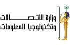

About USThe Information Technology Institute (ITI) is a national institute established in 1993 in Egypt specializing in IT. Decision Support Center (IDSC). It provides specialized software development programs to fresh graduates, as well as professional training programs and IT courses for the Egyptian Government, ministries, and local decision support centers. With the government’s objective of providing access and opportunity for all. ITI followed by opening a second branch in Alexandria in 1996 to create greater coverage of its services, and recently in September 2007, ITI opened two other branches in Assiut and Mansoura to maintain and assist in the spreading of its training services. |
||
|  |